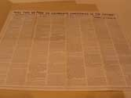

| Index |
|
| Section III. Free Speech in a Long, Cold War
[1948-1989] |
|
| Subsection A. Divided
Loyalties |
|
| Group 1: Blacklisting, Deportation, Red Squad | |
| Item
1:
Katherine Hyndman post card (c. 1950) [CHS#30] |
no picture |
| Item 2: 213 Days without bail
Katherine
Hyndman pamphlet (c. 1955) [CHS#32] |
no picture |
| Item 3: The Case of Irwin
Franklin
(c. 1955) [CHS#18] |
no picture |
| Item 4: You Be the Judge
(white)
Irwin Franklin Case (c. 1950) [CHS#20] |
no picture |
| Item 5: You Be the Judge
(yellow)
Irwin Franklin Case (c. 1950) [CHS#33] |
no picture |
| Item 6: Informational Pamphlet
for
naturalized and non-citizens re: Instructions for Immigrants Who Are
Arrested
(c. 1950) [CHS #19] |
no picture |
|
Item 7: Will
You Be Free to Celebrate Christmas in
the Future? { anti-communist poster reprints testimony before HUAC of Frederick Charles Schwarz, Executive
Director of the Christian Anti-Communist Crusade] (NL#481) |
 |